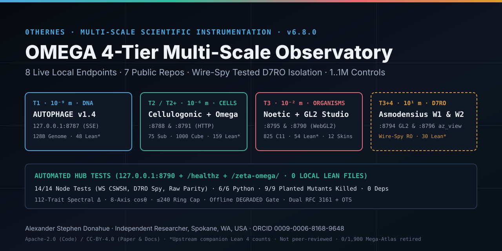

OMEGA 4-Tier Multi-Scale Observatory (v6.8.0)
127.0.0.1:8790server.mjs)computeDifferentialsCore latency (112-trait Δ + 8-axis cosθ)1. Four-Tier, Eight-Endpoint Architecture
A single zero-dependency Node.js ESM hub (server.mjs + lib/observatory_core.mjs) paired with a Python 3 read-only relay (macro_wild_relay.py) aggregates Server-Sent Events, binary AZST snapshots, WebSocket streams, and HTTP controls across four spatial scales (10^-9 m to 10^1 m).

| # | Tier | Endpoint | Instrument / Upstream Repo | Transport | Policy |
|---|---|---|---|---|---|
| 1 | T1 (10−9 m) | :8787 | AUTOPHAGE v1.4.0 (0thernes/autophage · 48 upstream Lean 4) | HTTP + SSE | Read/Cmd |
| 2 | T2 (10−6 m) | :8788 | Cellulogonic Mecha v1.5.0 (cellulogonic-mecha · 70 upstream Lean 4) | HTTP JSON | Read/Cmd |
| 3 | T2+ | :8791 | Cellular Engine Omega v5.2.0 (cellular-engine-omega · 89 upstream Lean 4) | HTTP JSON | Read/Poll |
| 4 | T3/4 | :8795 | Noetic Organism Omega v2.1.0 (noetic-organism-omega · 54 upstream Lean 4) | HTTP JSON | Read/DNA |
| 5 | T3+4 W1 | :8794 | Asmodensius-Native v1.1.0 WebGL2 (asmodensius-native · 30 upstream Lean 4) | AZST + WS | D7RO |
| 6 | T3+4 W2 | :8796 | Asmodensius-Native v1.1.0 Native az_view | HTTP Proxy | D7RO |
| 7 | Hub | :8790 | OMEGA Observatory v6.8.0 (this repository · 0 local Lean 4) | HTTP/SSE/WS | Supervisor |
| 8 | Atlas | /zeta-omega/ | Zeta-Omega v3.4.0 (alife-singularity-omega-package · 36 upstream Lean 4) | Static Safe | Read-Only |
2. Interactive Client-Side Genesis Clamping & D7RO Boundary Sandbox
Test the exact deterministic normalizeGenesisConfig clamping bounds (1..1,000,000 founders, autoCap, species ≤ min(100, n), 23-bit lesion mask, and bare-metal relay CLI generation) directly in your browser with zero external requests.
3. Numbered Claims Ledger (C1–C10)
Filter all ten tracked claims by epistemic tier. Program-audited claims are checked by deterministic automated tests, live sockets, property trials, and planted mutants—never overstated as formal proofs.
| ID | Tier | Claim Summary | Verification Evidence |
|---|---|---|---|
C1 | program-audited | Loopback Host/Origin/JSON/Sec-Fetch-Site guard, live raw-socket WS Upgrade 403 CSWSH rejection (admitting absent-Origin loopback CLI), and canonical resolveSafePath. | Test 2c, 3, 3b; Mutants M1, M5, M7 |
C2 | program-audited | Genesis clamping (1..1M, cap ≥ n, species ≤ min(100,n), 23-bit lesion, bare-metal flags) matches Python --dry-run on 18 raw unnormalized adversarial inputs. | Test 2a, 2b, 4 (250), 6 (18); test_relay.py; M2, M6 |
C3 | program-audited | Render-only D7RO boundary keeps matrix4x4[0..1][2..3]=(D7RO,0), preserves #ifdef PICK, and sends zero T1/T2 writes to mock Asmodensius in live loopback wire-spy test. | Test 5b, 5c, 5e; Mutants M3, M9 |
C4 | program-audited | 112-trait spectral delta clamps inputs to [0,1], obeys swap antisymmetry and shift invariance, and caps omnitemporal history ≤ 240. | Test 5a, 5b; Mutant M4 |
C5 | program-audited | Conservation gate fails closed: ALERT on nonzero residual/observerFail, DEGRADED on stale ≥ 15s or offline required tiers (t1_dna, t2_cells, t4_env). | Test 5b; Mutant M8 |
C6 | program-audited | 14/14 Node tests, 6/6 Python tests, 0 lint errors, and 9/9 planted mutants killed (7 core, 2 server) without dirtying results/mutation_audit.json. | npm test, npm run lint, npm run mutate |
C7 | empirical | Node v25.8.2 Win64 mean latency: 0.0504 ms differentials (p95 0.1169 ms), 3.1278 ms 10k-creature binary AZST decode (p95 4.1033 ms). | results/benchmarks.json |
C8 | indicator-only | chaosLyapunov volatility index, count-driven T3 organs, and Noetic header readouts are strictly visual/proxy indicators. | LIMITATIONS.md |
C9 | upstream-linked | 0 local Lean 4 files; 327 combined upstream 6-kernel Lean 4.35.0 theorems reported by six formal companion repositories. | docs/MEGA_ATLAS_CROSSCHECK.md |
C10 | open-conjecture | Zero (0 / 1,900) overarching Mega-Atlas open problems (AI-045, SYS-009, SYS-050) are solved or retired. | docs/MEGA_ATLAS_CROSSCHECK.md |
4. Planted-Regression Mutation Audit (9/9 Killed)
Every mutant runs inside an isolated temporary workspace copy without modifying the repository working tree. Scope: 7 mutants in lib/observatory_core.mjs and 2 mutants in server.mjs (a kill rate for 9 hand-planted regression mutants, not an automated repo-wide mutation score).
| Mutant ID | Target File | Injected Regression | Status |
|---|---|---|---|
M1_PATH_TRAVERSAL_BYPASS | lib/observatory_core.mjs | Disable .. escape rejection in resolveSafePath | KILLED |
M2_POPULATION_CLAMP_UNBOUNDED | lib/observatory_core.mjs | Remove 1..1,000,000 founder population clamping | KILLED |
M3_D7RO_OBSERVER_VIOLATION | lib/observatory_core.mjs | Mutate T1→T3 display coupling cell from D7RO to LIVE | KILLED |
M4_OMNITEMPORAL_CAP_LEAK | lib/observatory_core.mjs | Break ≤ 240 rolling history memory cap | KILLED |
M5_CSRF_ORIGIN_BYPASS | lib/observatory_core.mjs | Disable loopback Origin check in isSafeLoopbackRequest | KILLED |
M6_ECORES_FLAG_DROPPED | lib/observatory_core.mjs | Suppress --ecores bare-metal flag in buildRelayArgs | KILLED |
M7_WS_UPGRADE_CSWSH_BYPASS | server.mjs | Disable Host/Origin CSWSH rejection in WebSocket upgrade handler | KILLED |
M8_OFFLINE_CONSERVATION_FALSE_GREEN | lib/observatory_core.mjs | Allow offline T1 DNA engine to render false-green VERIFIED | KILLED |
M9_D7RO_WIRE_LEAK_SERVER | server.mjs | Leak T1 128B DNA POST to PORTS.macro inside transfectDnaToCells | KILLED |
5. White Paper, Machine-Readable FAIR Metadata & Cryptographic Provenance
All release artifacts are dual-licensed under Apache-2.0 (code) and CC-BY-4.0 (paper & docs), verified by cross-platform CI (ubuntu-latest + windows-latest), attested via GitHub Actions SLSA / Sigstore Rekor on the committed PDF & arXiv tarball, and dual-timestamped via DigiCert RFC 3161 (CHECKSUMS.sha256.tsr) and 3-calendar Bitcoin OpenTimestamps (CHECKSUMS.sha256.ots).
- Frozen AMS-LaTeX White Paper (PDF): Donahue_2026_omega_triscale_observatory.pdf
- Verification Evidence JSON: mutation_audit.json · benchmarks.json · citation-audit.json
- FAIR & Citation Metadata: CITATION.cff · codemeta.json · croissant.json · ro-crate-metadata.json
- LLM Context & Checksums: llms.txt · llms-full.txt · CHECKSUMS.sha256